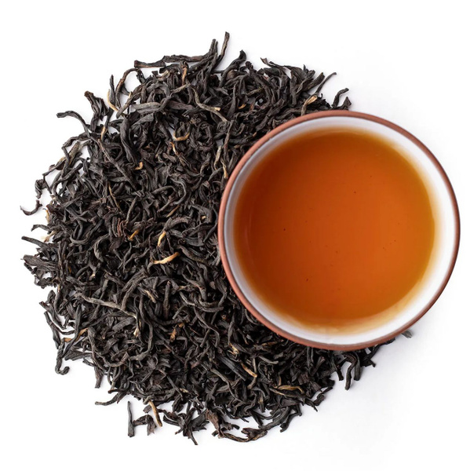

Любите побаловаться чайком? Превратите свой ароматный
напиток в целебный эликсир.
Смеркалось, на столе блистая
Шипел вечерний самовар,
Китайский чайник нагревая,
Под ним клубился лёгкий пар.
Разлитый Ольгиной рукою,
По чашкам тёмною струёю
Уже душистый чай бежал,
И сливки мальчик подавал...
Пушкин А.С., русский поэт
Только спустя почти 30 лет, при царе Алексее Михайловиче, русский посол в Китае Иван Перфильев вновь
привезет чай в Россию, а в 1769 году Россия заключит с Китаем первый договор на поставку чая.
Чай был для России довольно дорогим удовольствием - он стоил примерно в десять раз дороже , чем в Европе, поскольку доставлялся в Россию торговыми караванами, и путь от Пекина до Москвы занимал более года. Долгое время он оставался 'городским напитком', причем, преимущественно московским. Даже в Петербург чай привозят из Москвы, и до середины прошлого века в столице будет открыт только один специализированный магазин.
С помощью ∫ можно подсчитать, что общая площадь посадок чая в Российской империи составляла не более 900 гектаров.
Причем важно отметить, что чай — это не просто вода, а сложное химическое соединение C20H20O9
©Кафедра бизнес — информатики и математики
*
***
*****
*******
*****
***
*
Я говорю: опустоши свой разум,
будь аморфным, бесформенным, как вода.
Ты наливаешь воду в чашку - она становится чашкой,
ты наливаешь воду в бутылку - она становится бутылкой,
ты наливаешь воду в чайник - она становится чайником.
Вода может течь, а может крушить
Будь водой, друг мой
Брюс Ли
Пуэр — юньнаньский черный чай, один из видов хэй ча — китайского черного чая. Его название связывают с городом Пуэр в китайской провинции Юньнань, где находился большой чайный рынок. С этого города начинался Чайно-лошадиный путь. В настоящее время пуэр производят в этой провинции в 4 основных регионах — Сишуанбаньна, Линьцан, Пуэр (Cымао) и Баошань.
Ферментация пуэра окисляет полифенолы, образуя теаброунины, снижающие риск рака, усталость, уровень липидов и регулирующие микрофлору. C29H24O12 снижают холестерин и липогенез.
| Про черный чай | |||||
|---|---|---|---|---|---|
| Производство черного чая | Сбор | Свежие листья черного чая содержат в среднем (в пересчете на массу сухого вещества): 36% полифенольных соединений, 25% углеводов, 15% белков, 6.5 % лигнина, 5% золы, 4% аминокислот, никотин до 5%, липидов, 1.5 % органических кислот, 0.5 % хлорофилла. | Черный чай является одним из самых популярных видов чая во всем мире. | Ферментация | |
| Основные технологические процессы чайного производства одинаковы для всех сортов: сбор, затем собранное сырье обвяливают, скручивают, ферментируют, просушивают, сортируют. | В странах с жарким климатом чайное сырье собирают практически круглый год. | Один из самых важных этапов обработки черного чая. Проводится в хорошо вентилируемом помещении. Именно во время процесса ферментации окислительные процессы достигают своего кульминационного пика. | |||
| Завяливание | Это процесс биохимической подготовки чайного сырья к дальнейшей обработке. При завяливании из листьев удаляется лишняя влага, что повышает концентрацию клеточного сока и из-за чего начинается ряд биохимических процессов. |  | |||